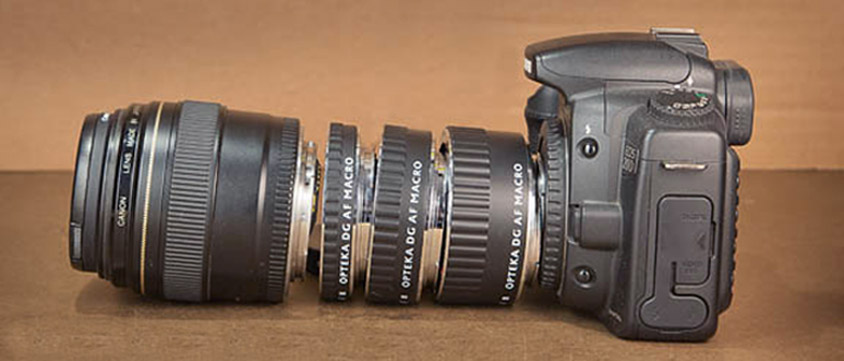
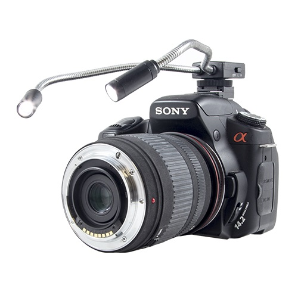
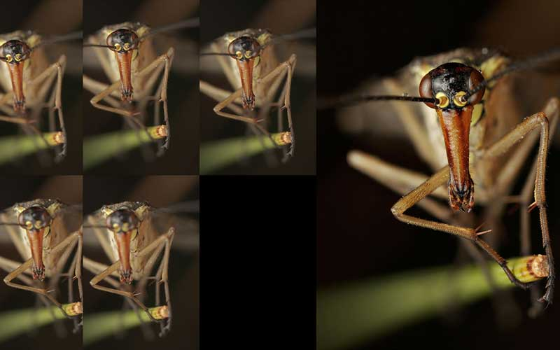
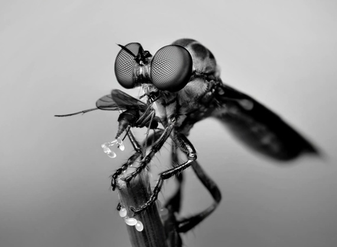

10 tips for macro photography for beginners
Tip 1. Experiment
If you don't have a macro lens or even a macro lens in your arsenal, use a regular lens by connecting it with the front lens to the camera mount using a reversible ring (a ring that is screwed onto the filter thread of one lens and used to attach to the camera body or another lens.). In this way, you can turn any lens into a macro lens.
Tip 2. Aperture
To take pictures with greater depth of field, you have to cover the aperture tightly, but you should not set the aperture value to more than f / 11 on crop cameras, and more than f / 14 to f / 16 in full frame. If you narrow the diaphragm harder, the diffraction will increase. It will "eat" all the small details of the object, and the picture will be "dusty". The aperture value from f / 5.6 to f / 8 will be ideal.
Tip 3. Equipment
Expensive paints are not always necessary for an ingenious picture. So do not aim to buy expensive equipment, especially if you do not have a complete idea of macro photography. To get an interesting shot, a budget lens, a simple macro ring or even a regular "csc" is enough.
Tip 4. Better lighting
Come early and leave later. The best lighting is morning and evening. The morning will give you an even light without translucencies and dips in the shadows. And in the evening you can get more dramatic and colorful lighting. But if you decide to take pictures in the afternoon, then a cloudy day will be ideal. Clouds will scatter bright sunlight, like a softbox, getting rid of harsh shadows.
Tip 5. Behavior of insects
Observe the habits and study the insects. This will help in finding them, the right approach for shooting different species. As with any animal, insects have their own behavior. And the point is not even in the timidity of some and the calmness of others, but in the knowledge of how they hunt, disguise themselves, where they spend the night, how they behave in the light. Understanding these little things will allow you to create truly magnificent pictures. And also to avoid possible danger if the insect is poisonous.
Tip 6. Macroflashes
Often, when shooting macro, the lens is brought close to the insect, a short shutter speed is used, and the aperture is closed above average. All this can greatly reduce the lighting in the picture. Special macroflashes, which are put on the lens, will help to cope with this. They will create three-dimensional lighting, and a ring flash can also give an unusual light effect. Macroflashes are an expensive pleasure, so budget options from little-known manufacturers are also suitable. They give quite an acceptable result.
Tip 7. Bigger doesn't mean better
You should not chase magnification as the main attribute of macro photography. Frames with a small scale but an interesting plot will look much more attractive than shots at high magnification.
Tip 8. Sharpness

As in any other genre, details are very important in macro photography. Although most macro lenses do not have a focal length of more than 100 mm, any shake will be noticeable and will inevitably affect sharpness. Therefore, use a short shutter speed, a tripod, a monopod - all that will help to avoid shaking the camera and get a clear picture.
Tip 9. Black and white macro
The world of insects is beautiful in its natural color, but sometimes a black and white picture can give a certain artistry. Using the principles of black and white photography, such as geometry, rhythm, brightness difference or contrast, you can convey no less expressiveness than color photography.
Tip 10. Stacking

When shooting macro, the focus area narrows sharply. At low magnification it is not so noticeable and can give an artistic effect, but at high magnification it becomes critical. Therefore, use the stacking technique. By combining several images with different focus into one in a special program or manually, you will expand the sharpness area, and the details will not suffer from diffraction due to the tightly compressed aperture.